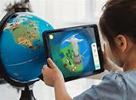
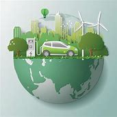

Inteligencia Artificial en la Medicina: Prediciendo el Futuro de la Salud
En el campo de la medicina, los avances en inteligencia artificial están allanando el camino hacia diagnósticos más precisos y tratamientos más efectivos. Gracias a algoritmos avanzados, ahora podemos prever enfermedades como el cáncer y las enfermedades cardíacas con una precisión sin precedentes, utilizando datos genéticos y análisis de imágenes médicas. La IA está revolucionando el cuidado de la salud, brindando esperanza y oportunidades para salvar vidas.
Realidad Aumentada en la Educación: Explorando Nuevos Horizontes de Aprendizaje
Las aulas de hoy están siendo transformadas por la realidad aumentada, que ofrece experiencias de aprendizaje inmersivas y envolventes. Desde la recreación de eventos históricos hasta viajes virtuales por el sistema solar, la realidad aumentada está llevando la educación a nuevas alturas. Los estudiantes pueden interactuar con conceptos abstractos de una manera tangible, lo que facilita la comprensión y el compromiso.
Computación Cuántica: El Futuro de la Informática
En el mundo de la informática, la llegada de las computadoras cuánticas está desafiando los límites de lo que creíamos posible. Estas máquinas prometen resolver problemas complejos de manera exponencialmente más rápida que las computadoras tradicionales, abriendo nuevas posibilidades en campos como la criptografía, la simulación molecular y la inteligencia artificial. La computación cuántica está en camino de redefinir el futuro de la tecnología.
Movilidad Eléctrica: Viajando hacia un Futuro Sostenible
Con la creciente conciencia sobre el medio ambiente, la movilidad eléctrica está ganando terreno en todo el mundo. Los vehículos eléctricos están experimentando avances significativos en la duración de la batería y la infraestructura de carga rápida, lo que los hace más accesibles y prácticos que nunca. Desde automóviles hasta drones de reparto, la movilidad eléctrica está allanando el camino hacia un futuro más limpio y sostenible.
Privacidad y Seguridad en Línea: Protegiendo sus Datos en un Mundo Digital
En un mundo cada vez más conectado, la privacidad y la seguridad en línea son de suma importancia. Se están implementando nuevas regulaciones y tecnologías para proteger los datos de los usuarios contra amenazas cibernéticas y violaciones de la privacidad. Desde sistemas de cifrado avanzados hasta medidas de protección contra ciberataques, estamos trabajando arduamente para garantizar la seguridad de nuestros datos en el mundo digital.
Internet de las Cosas (IoT): Conectando un Mundo Inteligente
La expansión de la Internet de las Cosas está transformando la forma en que interactuamos con el mundo que nos rodea. Desde la agricultura hasta la atención médica, los dispositivos IoT están optimizando procesos y mejorando la eficiencia en una variedad de sectores. Con dispositivos cada vez más inteligentes y conectados, estamos construyendo un futuro donde todo está interconectado.
Realidad Virtual: Explorando Nuevos Mundos desde la Comodidad de tu Hogar
La realidad virtual está llevando la experiencia humana a nuevas alturas, permitiéndonos explorar mundos virtuales desde la comodidad de nuestro hogar. Desde el entrenamiento empresarial hasta la terapia médica, la realidad virtual está siendo utilizada en una variedad de aplicaciones para mejorar nuestras vidas. Con avances en hardware y software, la realidad virtual está más inmersiva y emocionante que nunca.